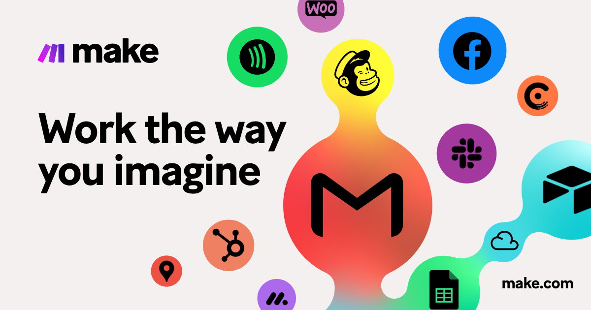

Do you spend your day flitting between writing emails, checking Slack messages, pasting data into spreadsheets, and updating project management tools?
Context switching—where you juggle too many tasks at once—is super common in modern workplaces. It also causes a 20 to 80% productivity loss, and
the solution isn't trying harder. It's automation.
By feeding mundane processes into a single, powerful automation tool like Zapier or Make, these repetitive tasks can execute seamlessly in the
background, giving you back valuable hours.
But how do you choose between the two tools?
- Zapier is a great jumping-off point if you're new to automation. It's intuitive, links with a huge library of apps, and doesn't require any coding knowledge.
- Make (formerly Integromat) has a highly visual interface that allows you to see the entire automation process and easily adjust your workflow. It's a complex alternative to Zapier, which may suit you if you already have a solid grounding in automation.
⋯
What is Zapier?
is a popular workflow automation tool that allows you to connect two or more apps like Paperform, Gmail, Trello, Slack, Hubspot CRM, Dropbox,
Google Docs, and thousands more. The beauty is you don't need to hire a software developer to stitch your apps together. Instead, you can use Zapier's no-code, point-and-click
interface to simplify the task-building process.
For example, to share your new blog article with your social media audience, you might use a WordPress → Twitter integration. Or perhaps
you want to send an email out after each newsletter form submission? You could use a Paperform → Gmail pairing.
As Zapier integrates with thousands of apps, there are numerous examples of time-savers like these you can work into your day—and they're
easy to set up too.
⋯
What is Make?

Make (formerly Integromat) is similar to Zapier in that it allows you to build and automate workflows using its visual interface.In just a few clicks,
you'll connect the apps you need and decide how they'll interact with each other. With Make, these are called "scenarios" rather than Zaps.
While Zapier is a slightly more established automation tool (it's been around for a whole year longer), Make has cemented itself in the
space thanks to the advanced features it offers.
Differences at first glace
The first difference between the two platforms is immediately apparent when using them for the first time: the user interface is structured very differently. When a workflow is created in Zapier, the required apps and functions are added one by one. This results in a linear process.

The disadvantage of this view: if you want to replace a single action, you have to delete all subsequent actions and create new ones.
Make, on the other hand, uses a visual representation that represents all the tools used and can be edited using drag-and-drop. Individual modules can be moved and edited as desired. It then looks like this:

Zapier is fundamentally "free", but you can't really automate anything in the free subscription. A maximum of five "zaps" (= process steps) are possible here.
What are these zaps? Imagine you want to post your email as an image on Wordpress and still want to format the name or you want to post a message from Gmail in
Slack and Trello - then you will already run into your limit here. You can connect a maximum of 2 apps with each other.
At Make, for comparison, you can put together an infinite number in the free model. Even with only 5 zaps, most of our customers usually don't manage it.
For example, website, chat, CRM, forms, and project management, each tool can be automated with 10-20 processes to save your company time and money through
cloud process automation. However, you only get 5 zaps.
⋯
Workflow Comparison
Zapier
With Zapier we can connect different apps to automate data exchanges and interactions between them.
For example, if you have an e-commerce store on Webflow,
you can program Zapier to add new order details to a connected Excel spreadsheet:
Automations like this are called Zaps. There are two parts to every Zap: a trigger and one or more action. When something happens (e.g., you get a new order),
a follow-up action takes place (order data gets added to a spreadsheet). We can use pre-made connections (template) or create custom Zaps to automate more complex tasks.
Using a Zap Editor, you can build:
- Simple “connecting” Zaps for streamlining one task
- Multi-step Zaps based on conditional IFTTT logic
- Zaps activated by triggers (events)
Make
Make comes with 650-plus pre-made app integrations. On top of that, you can connect to any other business app via API (though coding is required). This makes Make more versatile than Zapier.
You can fine-tune every scenario (the equivalent of a Zap) using:
- Modules: Actions, Aggregators, Iterators, Searches, and Triggers — extra commands you can assign to a scenario
- Functions: Binary functions for working with texts, numbers, dates — similar to those available in Excel
- Tools: More configs for programming multistep scenarios, filtering data, and refining process logic
Contact me today to learn more about how I can help your business.